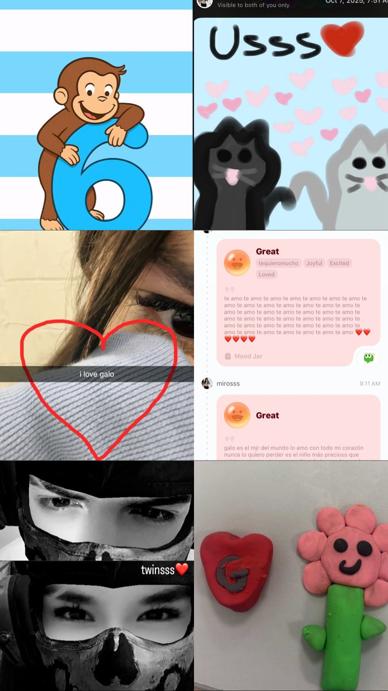
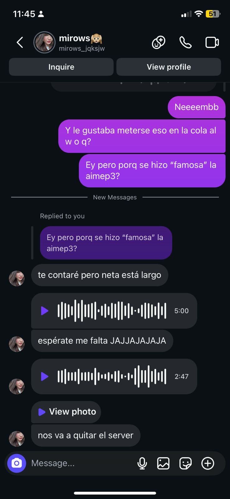

Feliz 1er Año Juntos 💙



Más feliz no puedo estar de haber conocido a la persona que más amo en el mundo,
hoy hace exactamente un año conocí a una persona que sin saberlo se iba a convertir en una de las personas más importantes de mi vida,
hace un año simplemente eras una persona especial que se hizo mi amiga, y hoy eres mi novia,
mi bebé, mi princesita, mi persona favorita y alguien que quiero muchísimo más de lo que he podido expresar con mis palabras.
En serio no sabes cuanto aprecio tu compañia a lo largo del año, fue muy lindo habernos conocido de una manera tan random,
quiem diría que un simple mensaje se iba a convertir en una relación tan bonita,
y que hoy después de un año sigamos juntos, me hace muy feliz saber que eres parte de mi vida y que me haces sentir tan especial,
agradezco que hoy seas mi novia, pero también agradezco que seas mi amiga y la persona que me hace sonreír todos los días.


